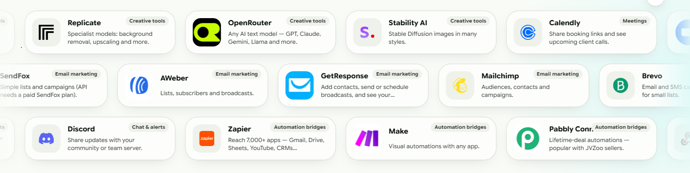
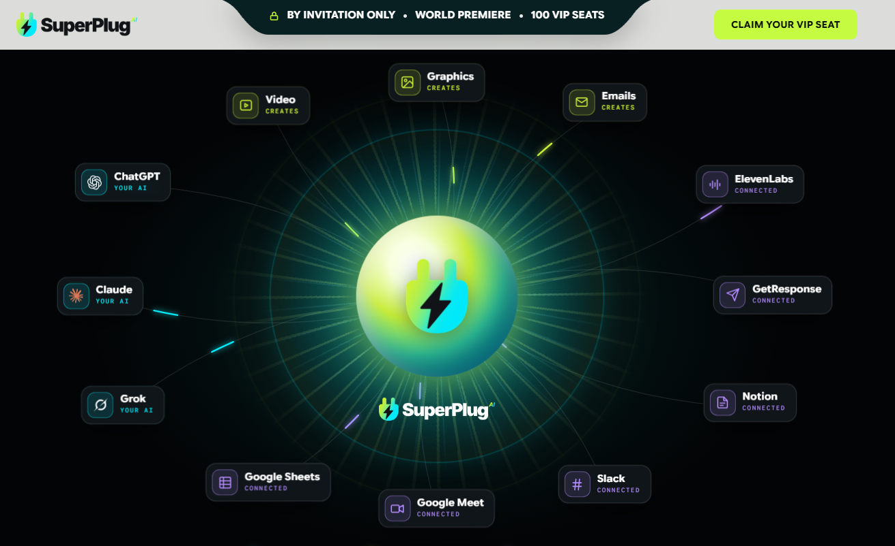

Connect ChatGPT, Claude, ElevenLabs, and Stability AI to Generate Engaging Videos, Thumbnails, and High-Converting Marketing Campaigns in Seconds.
YES, I WANT TO CREATE VIRAL AI VIDEOS NOW
How does AI-powered video generation work with SuperPlug AI?
SuperPlug AI unifies leading AI models—including ChatGPT, Claude, Grok, ElevenLabs, and Stability AI—into a single hub. It automates video scripting, voiceover generation, visual editing, and thumbnail creation without requiring complex manual workflows.
Can I use SuperPlug AI to create YouTube, TikTok, and Instagram videos without showing my face?
Absolutely! SuperPlug AI is designed for faceless video channels. You can generate engaging viral shorts, video ads, travel vlogs, educational tutorials, and lifestyle content complete with captions, voiceovers, and dynamic templates.
What other tools and integrations does SuperPlug AI support?
Beyond video creation, SuperPlug AI seamlessly connects with automation bridges like Zapier and Make, CRM systems like Mailchimp and GetResponse, as well as Google Sheets, Slack, Notion, and Discord for end-to-end content publishing.
Is SuperPlug AI beginner-friendly for content creators and marketers?
Yes! You don't need video editing experience or technical expertise. The intuitive point-and-click interface lets you select templates, plug in your topic, and generate publish-ready videos in just a few minutes.
Are there monthly subscription fees for SuperPlug AI?
During this exclusive world premiere launch, you can lock in Founding Member VIP access with a special lifetime deal, eliminating costly recurring monthly fees.
Are the videos and graphics created with SuperPlug AI eligible for commercial projects?
Yes, all video content, graphics, and email campaigns created through SuperPlug AI come with full commercial usage rights. You can monetize them on YouTube and social networks or sell video creation services directly to clients.

If You’re Still Seeing This Page, You’re One Of Them.
This page was never made public. It was sent to a small, hand-picked group of people we wanted with us on the day SuperPlug AI is revealed to the world.
On Wednesday, November 4 at 10:00 AM ET, the curtain goes up on this mega event. Our VIP guests will watch a single live demonstration showing how SuperPlug’s SuperCharge Engine connects creative production tools and guided workflows to your AI, and you’ll walk away with premiere-only bonuses that will never be offered again.